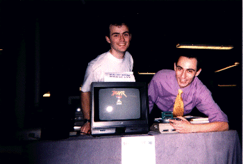

Milan motherboard

Jaguar Project development Kit
Update, May 25, 2000
.
Remember a little
At the last French Atari show in 1997 (Bercy,
Paris), was done a little demonstration of a BOOTROM, able to
start the jaguar console, and a board plugged
in Jaguar , connected to a ST...The purpose was to show the work we was
done.

Atari Show, Paris, 1997, BOOTROM
Demonstration with a Jaguar
Since, now a first working solution is now available.
Objectifs
The purpose of this project, is to give a hardware
and sofwtare solution to uplaod any programs
designed for Jaguar and start them. Thus, this
Kit use an alternate Eprom which replace the orginal
Atari Jaguar ROM and a GEM softwtre running with,
i think, any atar computers.
Currently, the hardware isn't ready, and so the
communication beetween the Jaguar and your Atari
will be done with the Joypad 2/Centroncis port
(like BJL solution).
An ISA extension board will be used nextly as soon as possible, in order to get a nice transfer speed rate.
Because somes KIT already does exists, "previous"
programs designed for Jaguar Server
or BJL should run with our new solution,
until no specific kit features is used inside these programs.
JagOS
Original Atari ROM is disabled by our EPROM, which
contains JagOS, our own small operating monitor.
This one start the Jaguar and display a small
"desktop" onto the monitor, and enter into a wait of command mode
from the computer. JagOS allows especially to
get a program and start it.
ABeside this basic function, JagOS support somes
systems calls like TOS for instance, to give somes services
to your programs Jaguar.

Jaguar Desktop Screen capture
JagStudio
JagStudio is a full GEM application which permit
you to communicate with the Jaguar.
Its main topic is send a program into the Jaguar
memory and start this one.
Beside this purpose, you can dump the memorie,
get the Eprom datas and receive messages
from JagOS or your applications, like a simple
Debug string or a 68000 exception.
This program work with MagiC 5 or TOS.(Two specific release)
Features:
- Automatic template source code generation.
- Upload a Jag program and start i or upload any binaries datas to the Jaguar memorie.
- Dump jaguar memorie.
- Read and write Eprom data.
- Handle 68000 jaguar exceptions.
- Automatic recognition of data transfert asked by the Jaguar.
- Compress .CRY pictures to .CCI format ( My own small picture compressed format, very easy).
- Console window to display debug message.
- External editor and assembler (Like Devpac).
- Help Buble and ST-Guide supported.
- MagiC 5 prequired for the MagiC release
- TOS 1.02 and more for the TOS realease
- Written in C language
- Nice graphic user interface GEM (Modal and no modal windows, Popus menus on desktop and icon, toolbar)
- English only language supported
- Longs filenames (With MagiC,).
- VA_START.protocole.
- AV_STARTPROG protocole
- BubbleGEM supported, with enable/disable
- ST-Guide aHelp format in english
- Enhancec INF configuratio file like Windows .INI
- ST-Guide Help files for JagOS andJToolBox.
Jtoolbox is a programming librairy which contains
all required code to drive the Jaguar. JagStudio is
simply linked with it to use the Jaguar. Thus,
you can use this one to realize your own JagStudio, or
use the Jaguar inside another program whithout
to need JagStudio.
Extension board
This board will be an ISA type extension and should
be used with Milan or PC computers. Not available
currently, Sébastien is working on.
Please check this dedicated page to our extension board to get more informations.
Required configuration
- Atari and compatibles
- 1 Mo free RAM at least, JagStudio use about 500 up to 700 Ko.
- IDE or SCSI harddisk
- MagiC 5 Operating system or TOS 1.02 and more
| Distribution.zip | Version 1.00 | 25 May 2000 |
| Aads.zip | Version 1.2.63 | 25 May 2000 |
Note: You need Aads only if you want to modify and compile yourself JagStudio.
Kit Installation
have a look to this installation
userguides online in English and in French, which contains
pcitures. These pictures came from Mattias Domin ( Matthias.Domin@t-online.de),
which allow me to use them. This installation is exactly the same like
for the BJL kit.que pour le kit BJL.
Jaguar link
42 Bastian Schick http://rgpc72.gp.fht-esslingen.de/students/elw5basc/
Jaguar Documentation http://www.geocities.com/SoHo/1460/dox.html
About Jaguar, read this FAQ
Read this Jaguar Frequently Asked Questions.
Contact
For any informations, please contact us at atari@linux.utc.fr
Or to our personnal e-mail: